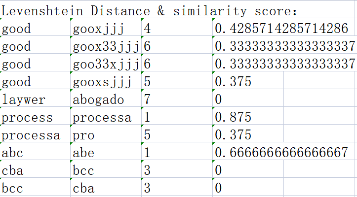

该模块为 Levenshtein Distance 指数获取模块，使用前请将需要对比的单词分两列添加至 .xlsx 表格中（如图1），之后将该表导入本页，即可自动化获取莱温斯坦距离及两词间正字法相似性分数 1（如图2）。
图1
图2
1SCHEPENS, JOB; DIJKSTRA, TON; GROOTJEN, FRANC (2012). Distributions of cognates in Europe as based on Levenshtein distance. Bilingualism: Language and Cognition, 15(1), 157–166. doi:10.1017/S1366728910000623